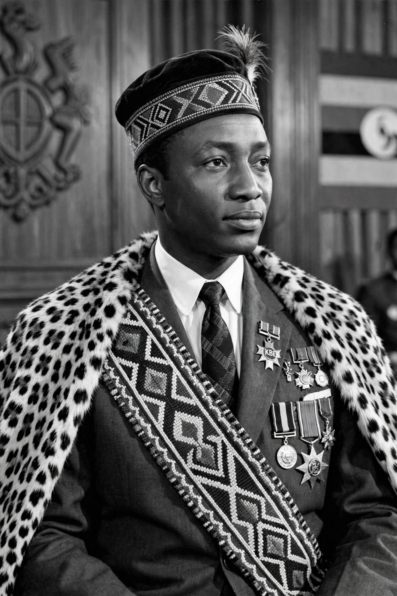

Sir Edward Frederick William David Walugembe Mutebi Luwangula Mutesa II (19 November 1924 – 21 November 1969) was Kabaka of Buganda from 1939 until his death and the first President of Uganda from 1963 to 1966.

Son of Kabaka Daudi Cwa II, educated at King's College Budo and Magdalene College, Cambridge. In 1953 Governor Andrew Cohen exiled him to London after Mutesa demanded Buganda's separation — the Kabaka Crisis — making him a nationalist hero; he returned in 1955 under a revised agreement echoing the 1900 Buganda Agreement.
At independence in 1962 Milton Obote became prime minister and Mutesa ceremonial president in 1963. Their alliance collapsed; in 1966 Obote suspended the constitution and troops under Idi Amin attacked the Lubiri palace. Mutesa fled to exile in London, where he died in 1969, officially of alcohol poisoning, though supporters suspected assassination. His remains were repatriated in 1971.